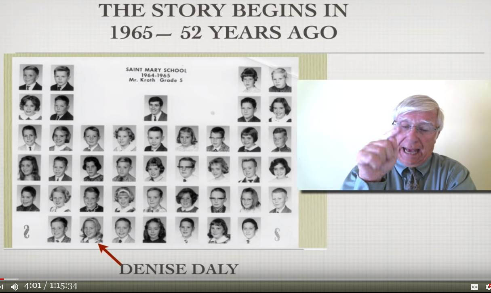
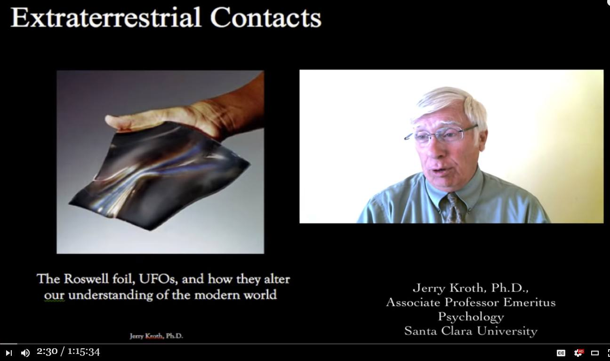
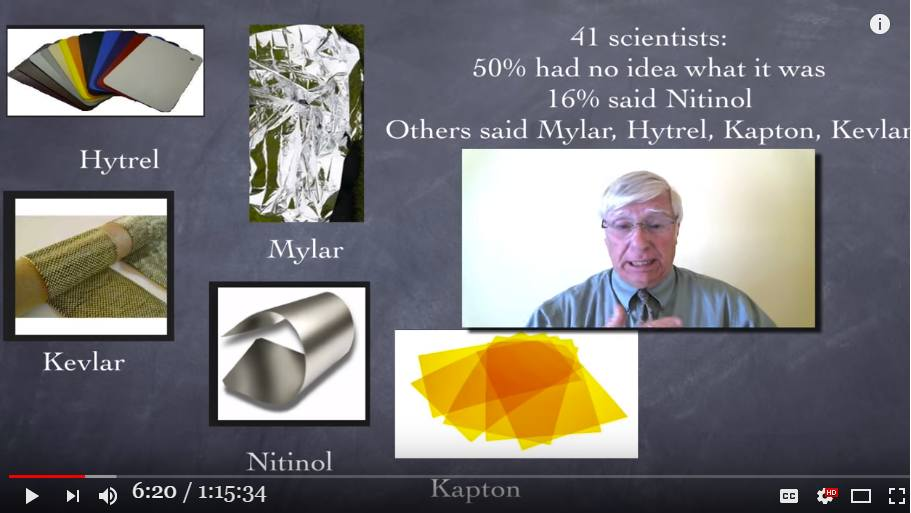
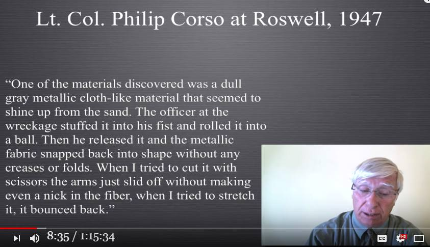

大学教授の証言：52年前、Roswell の金属シートを実際に手にした。

履歴
(2023-03-02) 追加。切り出し動画を追加。 (2023-03-01) 追加。DeepL 訳を追加。 大学教授の証言：52年前、Roswell の金属シートを実際に手にした。 （途中3） (2023-03-01) (2020-12-04) 追加。彼の証言部分の音声書写（自動生成）を追加。 大学教授の証言：52年前、Roswell の金属シートを実際に手にした。 （途中：その2） (2020-12-04) (2018-08-10) 作成。 大学教授の証言：52年前、Roswell の金属シートを実際に手にした。 （途中：その1） (2018-08-10)はじめに
・Jerry Kroth 博士は、大学（Santa Clara University）の心理学の教授で 13冊の著書（大半が学術書）を出版した実績がある人物。 ・その彼が、タイトルの証言をしている。抜粋（デタラメ）
・2:20 あたり。 ・昔（52年前）、私が 24-25歳位で、まだ博士号を取得する前のことだが、学校で 5年生の生徒を教えていた。少女がやってきて、「父が先生にコレをお見せするように、と言ってました」と言って5インチ角の紙のように薄い金属シートを手渡してくれた。 ・少女に言われるままに手で丸めてから、離すとシワ一つなく元に戻った。さらに少女に言われてボールペンをその金属シートに刺して、穴を穿とうとしたが、できなかった。ペン先の痕跡すら残らなかった。 ・更に少女に言われてハサミで切ろうとしたが切ることができなかった。3種類のハサミを試したが、同じだった。シートはハサミの刃で曲がりするが、切れなかった。その後、そのシートは少女に返した。 ・当時、この少女の父親は NASA の科学者で、あの金属シートは試作品の類いだろうと軽く考えていた。 ・そして、この金属シートの件については以後、45年間、特に気にもとめずに過ごしてきた。 ・だが、近年になって、他の人々による Roswell の金属シートの証言を見聞きした。それで気になり、大勢の科学者に彼が昔、手にした金属シートの件で質問してみた。すると… … … … …   動画（1:15:34）
Extraterrestrial contacts: the Roswell foil, UFO,s and how they alter our world (2018-08-10)前置
・この大学教授の、核となる証言部分の切り出し動画や音声書写（自動生成）を記録しておく。重要な証言。切り出し動画
音声書写（自動生成）（自動生成）
▼展開
hi my name is Jerry cross 01:30 I'm a professor of psychology in Santa 01:33 Clara University in California and this 01:36 I've written 13 books usually academic 01:39 this one is brand new 2017 and it starts 01:44 with a very very personal experience 01:46 that happened to me 52 years ago so I 01:50 was before my doctorate I am I'm 01:53 teaching the fifth grade and a little 01:56 girl comes up to me with a piece of 01:58 material about five inches square and 02:01 she says my daddy says and I should show 02:03 this to you and I was what 25 years old 02:07 24 years old 02:09 and I thought it was aluminum foil and 02:12 myself 02:13 thank you very much so well why don't 02:14 you crush it so I crushed it into a ball 02:17 she said let it go let it go and it just 02:19 absolutely opened up no creases nothing 02:23 I said wow that's not aluminum foil what 02:28 is that she said try to put a hole in it 02:31 so I took a ballpoint pen tried to J I 02:35 mean this is paper thin like a piece of 02:37 stationery silvery-gray a little bit 02:40 rubbery not too much a little bit and I 02:45 stabbed it and nothing happened it just 02:47 went like that and then it disappeared 02:51 when you took the ballpoint pen away she 02:53 said try to cut it I said is that okay 02:55 with your daddy and she said yes so I 02:58 took up my scissors and I tried to cut 03:00 it and it just bent you could not cut it 03:03 I tried three different kinds of 03:04 scissors so I said thank you and I 03:08 didn't think anything more about it for 03:11 probably 45 years I thought her father 03:14 probably worked at NASA and it was 03:17 probably some kind of love experimental 03:22 material and I say honestly I had no 03:25 interest in UFOs and nine so I am 03:29 working on my first book about UFOs that 03:32 it was published in in 2010 and I'm 03:38 reading something that's kind of strange 03:40 that suggests that this material has the 03:44 properties of the roswell crash of the 03:47 roswell foil which gave rise to this 03:51 book now I want to fill you in on a few 03:55 more details I thought I'm going to try 03:58 to find this girl well that was my class 04:02 what 52 years ago and there are people 04:07 on Facebook who still maintain contact I 04:10 thought I taught fourth grade they said 04:12 no you taught fifth grade and there's 04:15 some people who know all the names of 04:16 all those people they have their 04:18 Facebook alumni page they said her name 04:21 was Denise Daley and she was not in 04:24 school very long 04:25 and nobody knows where she is 04:28 he's they think that her father worked 04:31 for the military well well well isn't 04:33 that interesting so I talked to a 04:36 Hollywood producer who wanted to put 04:39 this thing on TV I said I haven't even 04:41 finished my book here he said I know a 04:45 private detective he'll try to find 04:46 Denise Daly she had a twin sister named 04:49 Veronica or Patricia Daly Michigan 04:52 Wayne's Saint Mary of Wayne school 1965 04:58 couldn't find her a Latvian a Latvian 05:03 private detective offered his services 05:06 for free he's interested in UFOs he 05:08 found about 15 Denis Daly's I called 05:11 them all I emailed them all nothing okay 05:15 so who did your father work for what 05:18 kind of material was that and the fact 05:21 is I have never ever seen this material 05:24 again so I started researching it and I 05:27 need to tell you that I decided let's be 05:29 scientific I teach research methods at 05:32 my university and so I'm very familiar 05:35 with good research and bad so ISIL sent 05:39 out queries to professors of material 05:43 science physicists chemists and I said 05:46 what was i holding in 1965 and I didn't 05:50 say anything about Roswell fifty percent 05:53 of them wrote back it said I have no 05:55 idea for 16 percent said we think it's 05:59 nitinol a combination of titanium and 06:04 nickel material others said it was mylar 06:07 a senior scientist from DuPont said it 06:10 was height rail cap Tom Kevlar I bought 06:13 all that stuff I have a piece of Kevlar 06:16 here but I guess I don't have it with me 06:19 I bought all those things I looked at 06:22 them all and I'm straight to say none of 06:25 them have these properties mylar creases 06:28 this material did not crease it would 06:31 refuse to crease same with Kevlar it's 06:34 too thick nitinol is too brittle 06:37 Don doesn't make it high trail doesn't 06:40 make it nothing that I bought try comes 06:44 close to this and the fact is I have 06:47 never seen it in 51 years why it would 06:50 be so great as a shirt it would be so 06:53 great as a raincoat or roof covering or 06:56 to coat a car with it would never 06:58 scratch I have never seen this material 07:01 again in my life and that's 52 years AB 07:04 century so here's where this all starts 07:08 I was reading my book in 2008 and I'm 07:13 reading this crazy man named Philip 07:16 Corso he's 80 years old writing a book 07:18 called the day after Roswell and he's 07:23 saying he was there and the crash 07:25 happened and there were aliens three and 07:27 one of them crawled out and they shot it 07:30 and and they did autopsies on the bodies 07:35 they had four fingers and no genitals 07:37 and large heads and white lymphatic 07:40 fluid instead of blood and I thought why 07:42 are you reading this junk this is just 07:46 junk pseudo-scientific 07:48 nonsense and then I read a paragraph and 07:53 this is the origin of this book that I 07:56 wrote this is the paragraph that I read 07:59 in 2008 one of the materials he's 08:04 talking about at the Roswell crash site 08:07 one of the materials discovered was a 08:10 dull gray metallic cloth like material 08:13 that seemed to shine up from the sand 08:15 the officer at the wreckage stuffed it 08:18 into his fist and rolled it into a ball 08:21 then he released it at the metallic 08:23 fabric snapped back into shape without 08:26 any creases or folds when I tried to cut 08:29 it with scissors the arms just slid off 08:31 without making even a nick in the fiber 08:34 when I tried to stretch it it bounced 08:36 back I said oh my god I had that 08:39 material in my hands in 1965 and I have 08:45 never seen it again that's the origin of 08:48 this book and of this video so let's 08:52 a little more about Roswell because in 08:55 my research I discovered there are 37 08:59 people who experienced this for there 09:03 were about 10 pieces of this material 09:06 that were found and most were turned 09:08 over to the Air Force but a couple 09:09 slipped by so here's what these people 09:12 say way back in 1947 09:14 it could not be torn or cut at all 09:16 extremely lightweight about four or five 09:19 inches squared well that's what I had a 09:22 sort of aluminum like foil most of it 09:25 was kind of double-sided material foil 09:27 like on one side and rubber like on the 09:29 other both sides were greyish silver in 09:32 color the foil more silvery than rubber 09:35 foil rubber material could not be torn 09:38 well that's what I had you could take 09:41 that stuff and wadded up and it would 09:42 straighten itself out that person in 47 09:47 sign-in affidavit in 1998 perhaps 09:51 aluminized cloth on other said well that 09:54 sounds right to me too 09:57 it was interesting I've got the hang all 10:00 the material he's an actual Wiz material 10:03 had some peculiar properties for 10:08 instance that looked like Hershey bar 10:10 wrapping sand but you squeeze it up in 10:14 your hand as hard as you could let go 10:16 and it returned originally to the 10:20 original shape instantly that's called 10:26 shape memory by the way 10:29 then the next day Jesse brought some of 10:33 the stuff into the intelligence office 10:36 and so we looked at it and played with 10:41 it a while when everybody went back to 10:43 work 10:44 later that day boom nobody knows 10:49 anything you know shut up nothing 10:52 happened 10:53 etc and when you're in the service you 10:58 do what they say to them so this book 11:04 then takes on a much larger character I 11:07 start with the foil but then I start 11:10 talking about what if all this happened 11:12 so if you haven't heard about the 11:13 Roswell episode 1947 a crowd of there
DeepL 原文不完全
こんにちは、私の名前はジェリー・クロスです。 カリフォルニアのサンタクララ大学で心理学の教授をしています。 カリフォルニアのサンタクララ大学で心理学の教授を務めており、この 13冊の本を書きました。 この本は2017年の新刊で、非常に個人的な体験から始まり とても個人的な体験から始まっています。 52年前に私に起こったことです。 博士号を取得する前でした。 5年生を教えていると、小さな女の子が 少女が私のところにやってきて 5インチ四方くらいの大きさのものを持ってきました。 「パパが、これを見せなさいって言うから 私は25歳だったでしょうか。 24歳くらい アルミホイルだと思いました。 私は ありがとうございました。 つぶしてくださいというので、つぶしてボールにしたら 彼女は言った、「そのまま、そのまま」と。 折り目も何もなく、完全に開いてしまったのです。 私は、これはアルミホイルじゃないねと言いました。 穴を開けてみろというので、ボールペンで穴を開けてみた。 ボールペンで穴を開けてみたんです。 これは文房具のような薄い紙で 銀色がかった灰色で、少し ゴムのようなもので、あまり大きくないものです。 刺したのですが、何も起きず、ただ という感じになって、消えてしまいました。 ボールペンを取り上げると、彼女は 「切ってみて」と言うので 「大丈夫？ 」と聞くと パパがいいって言うから ハサミで切ろうとしたんだ。 曲がってしまって切れないんだ 3種類のハサミを試しました 3種類のハサミを試しました。 それ以来、45年間は何も考えていませんでした。 おそらく45年間は、彼女の父親がNASAで働いているのだろうと思っていました。 おそらくNASAで働いていたのだろう、そしてそれは 愛の実験材料なんだろうと思っていました。 実験材料なのだろうと思いました。そして、私は正直に言うと、 UFOや9つの宇宙について、全く興味がなかったのです。 UFOに関する初めての本を書いていて、2010年に出版されました。 2010年に出版された、UFOに関する初めての本を執筆中です。 奇妙なものを読みました。 奇妙なものを読みました。この素材が、 ロズウェル墜落の特性を持ち、 ロズウェル墜落の特性があることを示唆しています。 この本の原因となったロズウェル箔の特性を持っているというのです。 もう少し詳しく説明しますと、私はこの女性を探そうと思いました。 この少女を探そうと思ったのです。 52年前のことですが Facebookで連絡を取り合っている人がいるんです。 4年生を教えてると思ってたら 5年生を教えてるとか その人たちの名前を全部知っている人たちがいて その人たちの名前を全部知っている人がいて Facebookの同窓会ページで、彼女の名前は デニス・デイリーという名前で、彼女はあまり学校にいませんでした。 学校にはあまり長くいない 誰も彼女の居場所を知らない 父親が軍で働いていたと 父親が軍で働いていたらしい それで、あるハリウッドのプロデューサーと話をしたんです。 ハリウッドのプロデューサーと話したんだ 私はまだ本が完成していないと言ったんです。 まだ本も書き終えていないと言うと、私立探偵を知ってるので 私立探偵を知ってる、彼が探してくれる デニス・デイリー......双子の妹がいた......名前は ヴェロニカかパトリシア・デイリー ミシガン州ウェイン市 ウェインのセント・メアリー・オブ・ウェイン校 1965年 ラトビア人の彼女は見つからなかったが ラトビア人の私立探偵が 彼はUFOに興味があるようで デニス・デイリーを15人ほど見つけた。 全部に電話したし、メールしてもダメだった あなたのお父さんは誰に雇われてたんですか？ あなたのお父さんは誰のために働いていたのですか？ 私はこの資料を見たことがありません。 ということで、調べ始めたんです。 たのです。 私は大学で研究方法を教えています。 研究方法を教えているので、良い研究、悪い研究に精通しています。 良い研究、悪い研究というのはよく分かっています。 材料科学、物理学、化学の教授に問い合わせをしました 問い合わせをしたのですが、私は 私は1965年に何を持っていたのか、ロズウェルの50%について何も言わなかった。 ロズウェルについては何も言いませんでしたが、50％の人が ロズウェルについては何も言いませんでした。 16％の人が、これはニチノールだと思う、と答えました。 ニチノール......チタンとニッケルを混ぜたものです。 他の人はマイラーだと言いました。 デュポン社のシニア・サイエンティストが言うには、それは ハイトレールキャップ トム・ケブラーを購入しました。 ケブラーも持っています。 持っていないようです。 全部買ったんです。 どれもこれも、このような特性を持つものではありません。 マイラーには折り目がつく この素材は折り目がつきません。 ケブラーも同じで、折り目がつきません。 ニチノールは厚すぎて脆い ドンはハイトレイルを作らない。 ハイトレイルは作れないし、何を買ってもこれには及ばない。 この51年間、一度も見たことがありません。 51年間一度も見たことがない。 シャツにしたら最高だ。 レインコートやルーフカバー、車のコーティングにも最適です。 車のコーティングにも最適です。 この素材は、もう二度と見たことがない。 私の人生で二度と見たことのない素材です。 世紀、ここからすべてが始まるのです。 2008年、私は自分の本を読んでいました。 フィリップ・コルソという名の狂った男を読みました。 フィリップ・コルソという、80歳の老人が書いた、 「ロズウェルの翌日」という本を書いていました。 ロズウェルの翌日という本を書いていて、自分がその場にいて、墜落事故が 墜落事故が起こり、3体のエイリアンがいて 一匹が這い出てきて、それを射殺したそうです。 そして、死体の検死をしたところ 指は4本、生殖器はなく 大きな頭と白いリンパ液がありました。 血の代わりに白いリンパ液があった。 こんなガラクタを読んでいるんだ。 ジャンクな疑似科学 そして、ある段落を読むと これが私が書いたこの本の原点です この段落は、2008年に私が読んだものです。 2008年に読んだ段落です。 ロズウェルの墜落現場について話しています。 発見された物質の一つは、 鈍い灰色の金属布のような物質が発見されました。 砂の中から光っているように見えた 残骸にいた警官はそれを拳に詰め こぶしの中に入れて丸めた。 その金属的な布は 布は、折り目もなく、元の形に戻された。 ハサミで切ろうとすると、腕の部分が折れてしまった。 ハサミで切ろうとしても、腕はすべり落ちてしまう。 繊維に傷ひとつつけずに 伸ばそうとすると、跳ね返される。 私は、ああ、1965年にこの素材を手にしたんだと思いました。 1965年に手にしたこの素材を、私はもう見たことがありません。 それが、この本とビデオの原点です。 この本とビデオの原点です。 ロズウェルについて、もう少し詳しく説明しましょう。 ロズウェルについて、もう少し詳しく説明しましょう。 の人が体験していることがわかりました。 この資料が10個ほど見つかりましたが、 発見され、そのほとんどが空軍に引き渡されましたが ほとんどが空軍に引き渡されましたが、2人ほどが しかし、2人ほどは、この資料から漏れています。 1947年のことです。 引き裂くことも切ることもできない 非常に軽量で、4、5インチ四方の大きさ 4、5インチ四方の大きさです。 アルミホイルのようなもので、そのほとんどが 両面とも箔のようなもので 片面が箔、もう片面がゴムのようなもので を、もう一方の面は灰色がかった銀色でした。 箔はゴムよりも銀色が強い 箔のゴム素材は破れませんでした まあ、それは私が持っていたものです。 を、その場で丸めて、その場でまっすぐ その人は、47年に 1998年の宣誓供述書では、おそらく アルミ蒸着した布があります。 私もそう思います。 面白かったです。 その素材は実際のWizの素材です。 には奇妙な性質がありました。 例えば、ハーシーバーを包む砂のような 砂を包んでいるように見えますが、手のひらで思いっきり 手のひらに乗せると、思いっきり離すと 元の形に戻るんです。 瞬時に元の形に戻ります。 形状記憶といいます 翌日、ジェシーがその一部を持ち込むと 情報局に持ってきました 私たちはそれを見て、遊びました しばらくして、みんなが仕事に戻ると 仕事に戻りました。 その日のうちに、誰も知らないことになった 何も知らない......黙れ......何も起きない という感じでした。 などと言いながら、奉仕活動をしていると この本では、彼らが言うとおりにするのです。 というわけで、この本はもっと大きなキャラクターを描くことになる。 箔をつけることから始めたのですが、その後 もし、このようなことが起こったら......という話です。 もし、ロズウェルのエピソードを知らないのなら ロズウェルのエピソードを知らない人は、1947年にそこに集まった(2018-08-10) (2020-12-04) (2023-03-01) (2023-03-02)